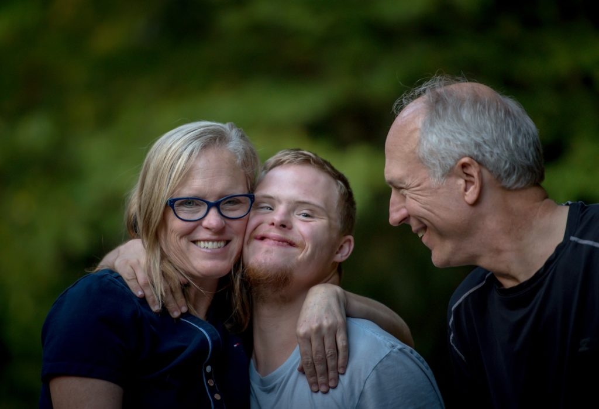

A carer is someone who provides informal, unpaid, long-term support to a person with a disability. Family members are the most common carers, followed by friends and neighbours. While carers aim to give the best quality of life for the person with a disability, this usually comes at a cost, putting themselves at a greater risk for poor health and social isolation.
Carers rank lowest in well-being compared to all other groups in Australia due to the physical, emotional, mental and financial demands of their role. As a support worker, you need to recognise the work that carers do and acknowledge the stresses they face. They are essential to the service user’s health and well-being and should be appreciated for what they do. Building a respectful and trusting relationship with carers is crucial for creating the best support plans and strategies.